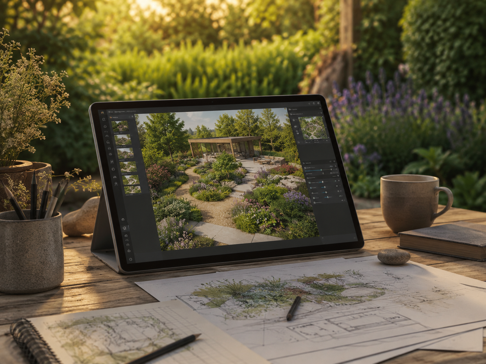

Betriebsaufbau
Website und Leistungsprofil werden konkret
Der Außenauftritt wird derzeit unter dem vorläufigen Namen „Tobias Dio – Garten- und Landschaftsbau“ aufgebaut. Leistungen und Einsatzgebiet werden schrittweise präzisiert.
Aktuelles
Hier werden künftig freie Kapazitäten, saisonale Hinweise, neue Leistungen und dokumentierte Projekte veröffentlicht. Bis dahin zeigt die Seite den aktuellen Stand des Betriebsaufbaus.
Der Außenauftritt wird derzeit unter dem vorläufigen Namen „Tobias Dio – Garten- und Landschaftsbau“ aufgebaut. Leistungen und Einsatzgebiet werden schrittweise präzisiert.

Rückschnitt, Flächenpflege und kleinere Instandsetzungen lassen sich besser umsetzen, wenn Zustand, Zugänglichkeit und Entsorgung früh geklärt werden.

Geplant sind Gartenbereiche, die nicht nur direkt nach der Fertigstellung wirken, sondern sich sinnvoll entwickeln und mit vertretbarem Aufwand pflegen lassen.

Bei komplexeren Ideen können einfache räumliche Darstellungen helfen, Proportionen, Wegeführung und Anordnung vor der Umsetzung verständlicher zu machen.